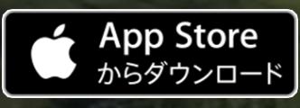
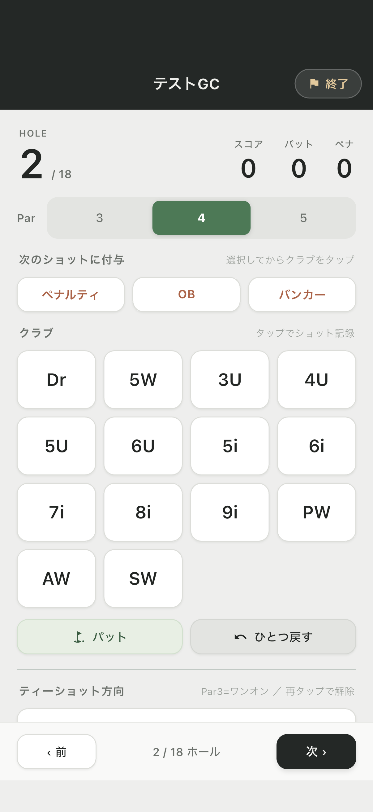
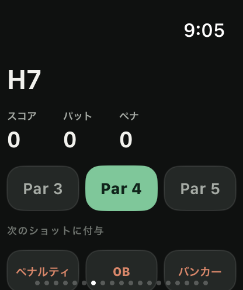
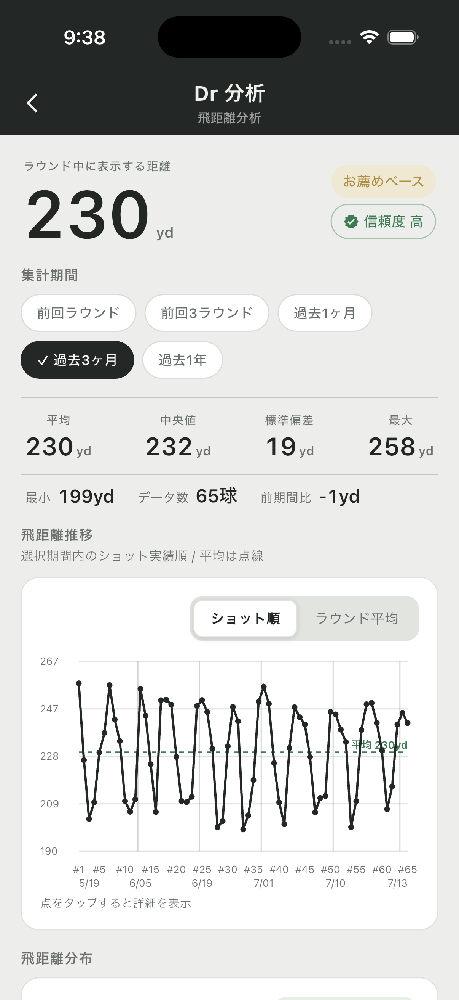

FREE
ラウンドを記録する
¥0
- ラウンド・ショット記録
- スコアカード
- 基本集計
- Apple Watch連携

RECORD. REVIEW. IMPROVE.
iPhoneとApple Watchで、打ったクラブやショット結果をその場で記録。 ラウンド後は、クラブ別の飛距離・ミスの傾向・ショット履歴まで振り返れます。


01 · DURING THE ROUND
スコアだけでなく、使用クラブ、パット、OB、ペナルティ、バンカー、ティーショット方向まで記録できます。ショット位置と飛距離はGPSで保存され、あとから1打ずつ確認できます。
打順・クラブ・位置・距離を
ショット履歴に残す
02 · APPLE WATCH
iPhoneで始めたラウンドをApple Watchへ連携。クラブ、パット、OBなどを手首から入力し、記録はiPhone側のラウンドへ反映されます。

03 · AFTER THE ROUND
平均飛距離を眺めるだけでなく、飛ばなかった一打や左右のブレまでショット単位で確認。感覚だけの反省を、次のラウンドで試せる改善点に変えます。
Premium クラブ統計・ショット履歴・解析コメント・クラブ別分析
FAQ
はい。iPhoneだけでラウンドやショットを記録できます。
現在はiPhone向けアプリです。Android版・Webアプリには対応していません。
はい。App Storeのアカウント設定からいつでも管理・解約できます。次回更新日の24時間前までに解約すると、次回以降は更新されません。
一打ずつ残す。次のラウンドで確かめる。